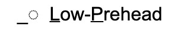

TSM記号の入力は、コマンドメニューから行います。コマンドメニューは［esc］キーを押すことで表示できます。
コマンドメニューを押下すると、ウィンドウ上部からメニューが降りてきます。この状態で2文字からなるコマンドを入力することになります。また、存在しないコマンドを入力した、あるいは再度［esc］キーを入力した場合、通常の編集画面に戻ります。
使用できるコマンドは以下の通りです（コマンドは大／小文字どちらでも構いません）。
| コマンド | 表示される記号 | 意味 |
|---|---|---|
| LF |  | 低下降調（音調核） |
| HF |  | 高下降調（音調核） |
| RF |  | 上昇下降調（音調核） |
| LR |  | 低上昇調（音調核） |
| HR |  | 高上昇調（音調核） |
| FR |  | 下降上昇調（音調核） |
| ML |  | 平坦調（音調核） |
| H1 |  | 高頭／尾部の強勢(1) |
| H2 |  | 高頭／尾部の強勢(2) |
| H3 |  | 下降頭部 |
| L1 |  | 低頭／尾部の強勢(1) |
| L2 |  | 低頭／尾部の強勢(2) |
| L3 |  | 上昇頭部 |
| HP |  | 高前頭部 |
| LP |  | 低前頭部 |
| SU |  | 下線の設定（選択されている範囲に下線が引かれます） |
| CU | 下線の解除（選択されている範囲の河川が解除されます） | |
| IP |  | 音調句の切れ目 |
| FS |  | 長めの休止 |
コマンドメニューには、TSM記号の入力以外にもいくつかの機能があります。それらを以下に示します。
| コマンド | 意味 | |
|---|---|---|
| AA | Add A tone | ドットの追加（詳細はこのページを参照） |
| SI | Save Image | 画像ファイルの出力（ウィンドウ上部の［Save Image File］と同機能） |
| SP | Save Project | プロジェクトファイルの出力（ウィンドウ上部の［Save Project File］と同機能） |